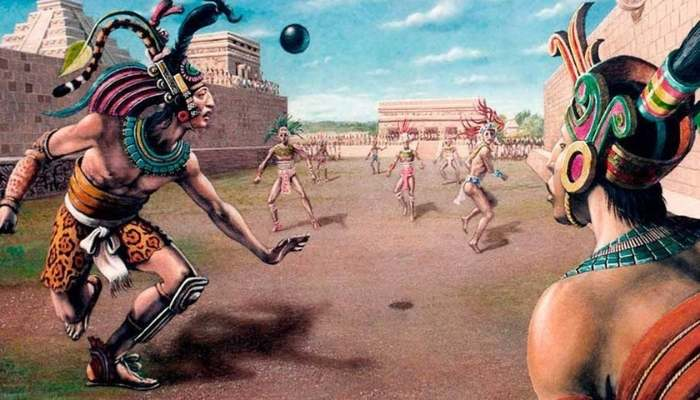
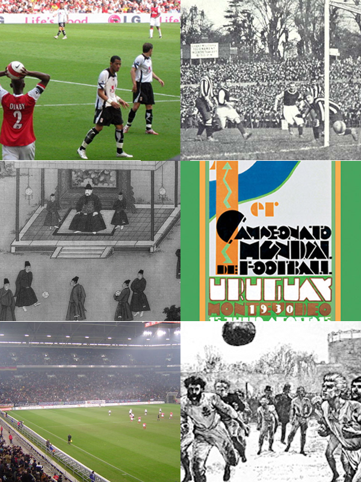
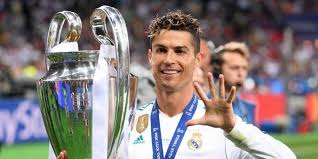

El antiguo juego de pelota, que se cree que jugaban los mayas hace 3500 años,
es un precursor del deporte que hoy conocemos como futbol.
La historia del futbol se considera a partir de 1869, año de fundacion de la Asociacion Inglesa de Futbol,
aunque en sus origenes, al igual que los demas codigos de futbol, se remontan varios siglos en el pasado,
particularmente en las islas britanicas durante la Edad Media.1?2? Si bien existian puntos en
comun entre diferentes juegos de pelota
que se desarrollaron desde los años del siglo III a. C.2?
Los primeros codigos britanicos que dieron origen al balompie se caracterizaban por su poca organizacion y
violencia extrema.3? No obstante, tambien existian otros codigos menos violentos y mejor organizados.
Quizas uno de los mas conocidos fue el calcio florentino,
deporte de equipo muy popular en Italia que tuvo incidencia en los codigos de algunas escuelas britanicas.
La formacion definitiva del futbol tuvo su momento culminante durante el siglo xix.


En 1848, representantes de diferentes colegios ingleses se dieron cita en la Universidad
de Cambridge para crear el código Cambridge, que funcionaría como base para la creación del
reglamento del fútbol moderno Finalmente, en 1863 en la ciudad de Londres se oficializaron
primeras reglas del fútbol.
Desde entonces el fútbol ha tenido un crecimiento constante hasta el momento a llegar
a ser el deporte más popular del mundo con unas 270 millones de personas al día involucradas,
siendo al día de hoy un total de más de 4.000 millones de aficionados del fútbol Con
la realización de la primera reunión de la International Football Association Board en 1886 y
la fundación de la FIFA en 1904, este deporte se ha expandido hasta llegar a todos los rincones del mundo.
A partir de 1930 se comenzaría a disputar la Copa Mundial de Fútbol,
que se convertiría en el evento deportivo con mayor audiencia del mundo
COMO FUE EL PRIMER CAMPEONATO DE FUTBOL
SUS MAXIMOS GOLEADORES DE LA HISTORIA
Cristiano Ronaldo
goles anotados:El delantero suma 893 goles en 1224 partidos oficiales
(una media de 0,72 tantos por partido) con las camisetas de Sporting (5 goles);
Manchester United (145); Real Madrid (450); Juventus (101) y Al-Nassr (64);
a los que añade 128 goles con la selección de Portugal.
es un futbolista profesional portugués que juega como delantero
y capitán del club Al Nassr de la Pro League saudí y de la selección nacional de Portugal .
Ampliamente considerado como uno de los mejores jugadores de todos los tiempos,
Ronaldo ha ganado cinco premios Balón de Oro
 >
Leonel Messi
goles anotados:Messi lleva convertidos nada menos que 834 goles en su carrera,
que lo ubican como el segundo máximo artillero de todos los tiempos.
De ellos, 672 llegaron vistiendo los colores del Barcelona,
106 con la Selección Argentina, 32 con el PSG y 24 con Inter Miami.
Leo Messi, es un futbolista argentino que juega como delantero o centrocampista.
Desde 2023, integra el plantel del Inter Miami de la MLS canadoestadounidense.
Es también internacional con la selección de Argentina, de lo que es capitán.
>
Como se narra los partidos?
La narracion ha influido con mucha impotancia en futbol
aumenta la sensacion de placer y suspenso
la copa del mundo es el titulo mas desaadom de todos los jugadores

 >
>